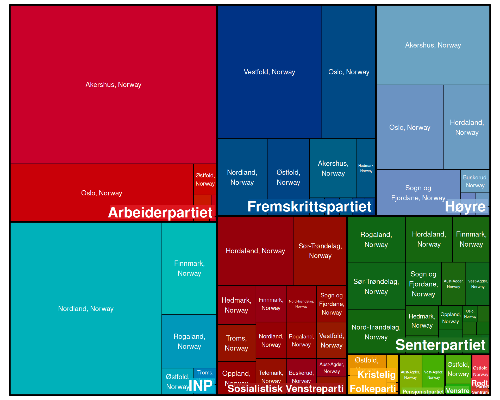
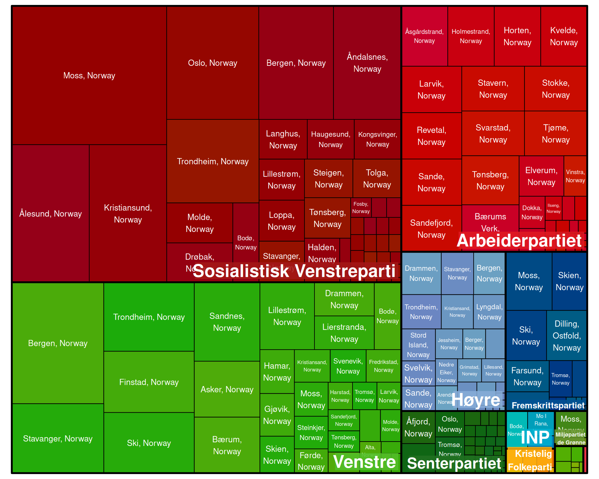
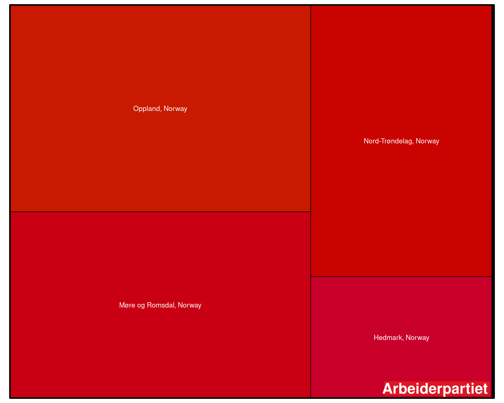
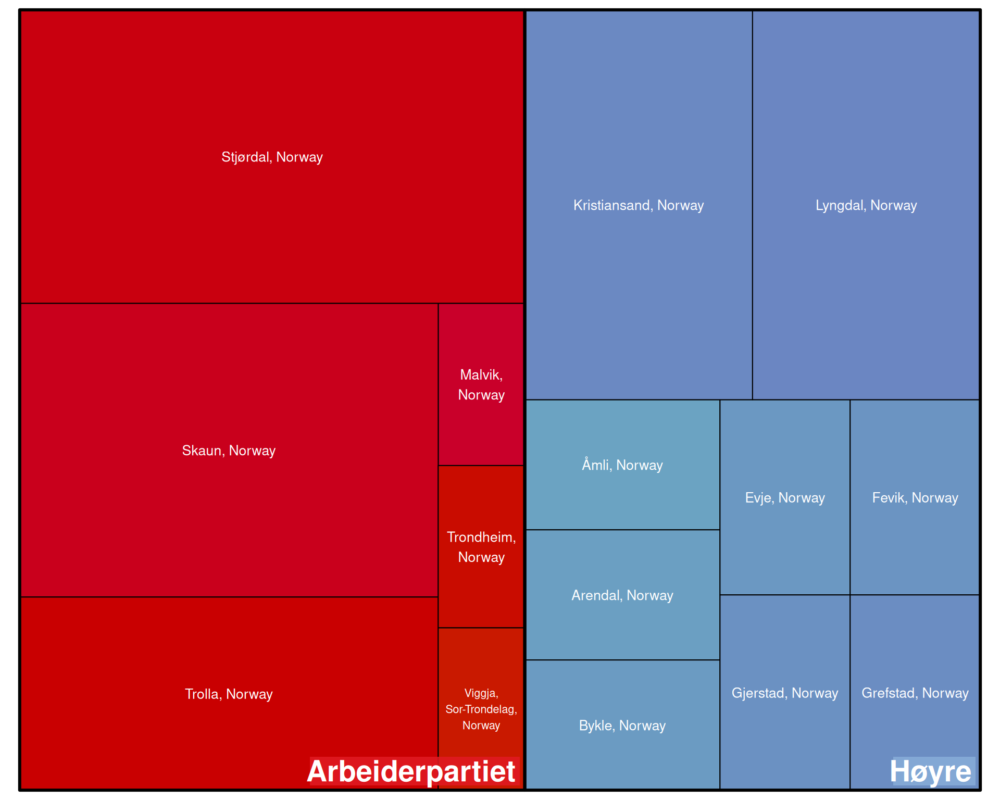

Location
Geographical Targeting
The chart below displays the geographical targeting of political advertisers on Meta platforms.
The table above shows spending data from Meta at the advertiser level, broken down per targeting criterion. This means we can’t account for combinations of targeting criteria.
For example, if one ad targets two ZIP codes with $100 and another targets just one of those ZIP codes with kr100, we can’t separate the overlap. In this case, we record kr200 spent on the shared ZIP code and kr100 on the other.
The size of each area in the chart indicates the amount of money spent by each political party on specific locations.

The size of each area in the chart indicates the amount of money spent by each political party on specific locations.

Geographical Exclusion
The following graphs depict the geographic locations that certain political advertisements will exclude on Meta, along with the amounts that parties spent on these exclusions.
The table above shows spending data from Meta at the advertiser level, broken down per targeting criterion. This means we can’t account for combinations of targeting criteria.
For example, if one ad targets two ZIP codes with kr100 and another targets just one of those ZIP codes with kr100, we can’t separate the overlap. In this case, we record kr200 spent on the shared ZIP code and kr100 on the other.
The size of each area in the chart indicates the amount of money spent by each political party on specific locations.

The size of each area in the chart indicates the amount of money spent by each political party on specific locations.
